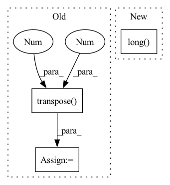

Pattern ID :15737
Before Change
c, r = torch.meshgrid(torch.arange(cols), torch.arange(rows))
c = torch.transpose(c.cuda(), 0, 1)
r = torch.transpose( r.cuda(), 0 , 1 )
points = torch.stack([c, r, depth])
points = points.reshape((3, -1)).T
points = points[mask.reshape(-1)] // shape = n_points, 3
// (5 - 10 ms)After Change
return inv_Tr
def project_disp_to_points(calib, disp, max_high):
mask = (disp > 0).reshape(-1).long()
disp = disp.clamp(min=0) + 0.1
// print( torch.sum(disp < 0) ) // Always False !!
baseline = 0.54
depth = calib.f_u * baseline / (disp) In pattern: SUPERPATTERN
Frequency: 3
Non-data size: 3
Instances Fragment ID: 53064168
Project Name: amrelsersy/stereo-3d-detection
Commit Name: 02583fa0a7bd1e3d1c8632688113329b81157122
Time: 2021-05-24
Author: mamoanwar97@gmail.com
File Name: Models/AnyNet/preprocessing/generate_lidar.py
M Class Name: AnonimousClass
N Class Name: AnonimousClass
M Method Name: project_disp_to_points(3)
N Method Name: project_disp_to_points(3)
M Parent Class:
N Parent Class:
M File Name: Models/AnyNet/preprocessing/generate_lidar.py
N File Name: Models/AnyNet/preprocessing/generate_lidar.py
M Start Line: 21
M End Line: 42
N Start Line: 21
N End Line: 33
Before Change
valid_labels = torch.gather(reducing_list.to(device), 0, valid_labels)
valid_labels = valid_labels.unsqueeze(0)
valid_scores = valid_scores.unsqueeze(0).transpose(-2 , -1 )
return valid_scores, valid_labels
After Change
reducing_list[ign_label:]
], 0)
valid_labels = torch.gather(reducing_list.to(device), 0,
valid_labels.long() )
return valid_scores, valid_labels
Fragment ID: 53064187
Project Name: isl-org/open3d-ml
Commit Name: 67123f7e9d5dbbe6a73c42ef648093a7d25ace4a
Time: 2021-05-11
Author: sanskaragrawal107@gmail.com
File Name: ml3d/torch/modules/losses/semseg_loss.py
M Class Name: AnonimousClass
N Class Name: AnonimousClass
M Method Name: filter_valid_label(5)
N Method Name: filter_valid_label(5)
M Parent Class:
N Parent Class:
M File Name: ml3d/torch/modules/losses/semseg_loss.py
N File Name: ml3d/torch/modules/losses/semseg_loss.py
M Start Line: 19
M End Line: 35
N Start Line: 21
N End Line: 35
Before Change
preds.append(self.Linear(h))
preds = torch.stack(preds, dim = 1)
if y is not None:
preds_ = torch.transpose( preds, 1 , 2 )
//print(preds.size())
y = y.long()
loss = self.Loss(preds_, torch.squeeze(y))After Change
preds = self.Linear(hs.contiguous().view(x.size(0), -1))
preds_.append(preds)
if y is not None:
loss+=self.Loss(preds, y[:,i].squeeze().long() )
preds_ = torch.stack(preds_, dim = 1)
if y is not None:
loss/=len(xs) Fragment ID: 53064192
Project Name: dido1998/recurrent-independent-mechanisms
Commit Name: d87a800096eaa36730cbabac535eea24973f3799
Time: 2020-02-11
Author: adidolkar123@gmail.com
File Name: networks.py
M Class Name: CopyingModel
N Class Name: CopyingModel
M Method Name: forward(5)
N Method Name: forward(5)
M Parent Class: nn.Module
N Parent Class: nn.Module
M File Name: networks.py
N File Name: networks.py
M Start Line: 255
M End Line: 276
N Start Line: 291
N End Line: 313